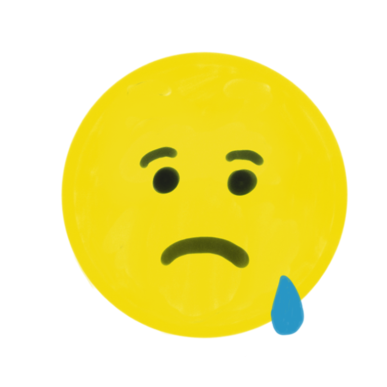
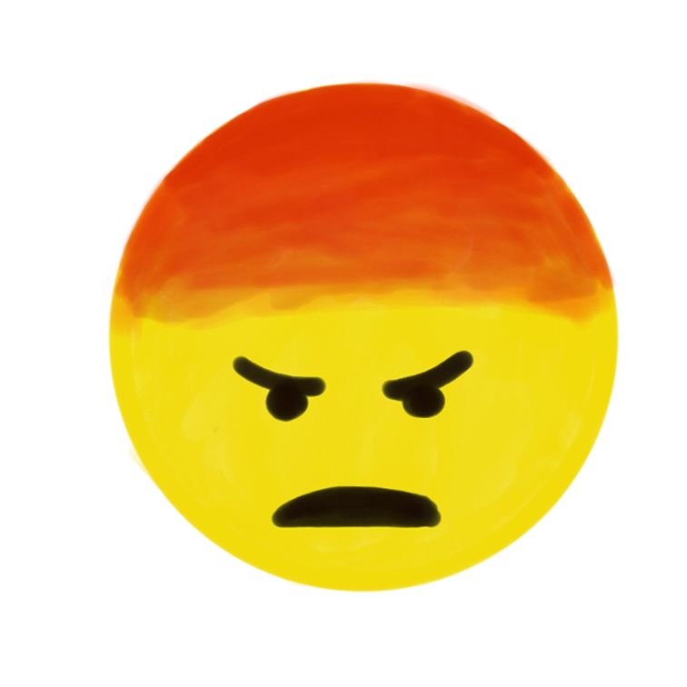
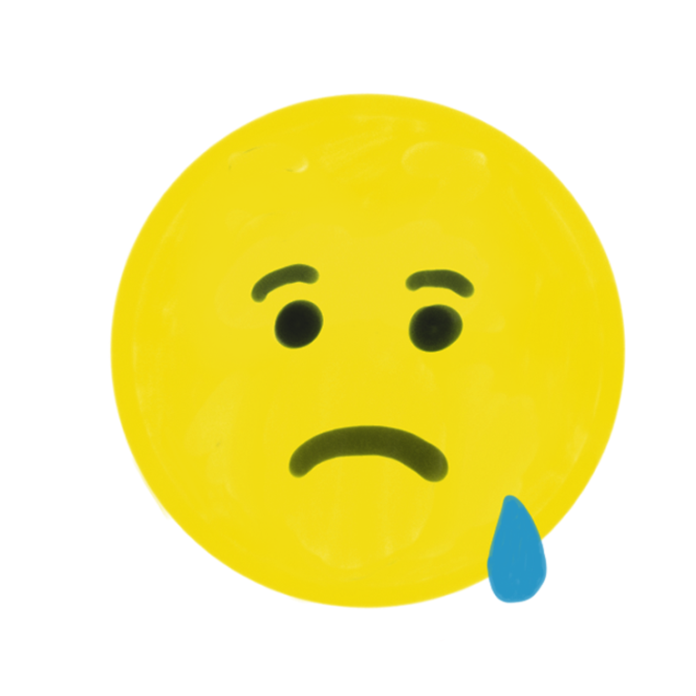
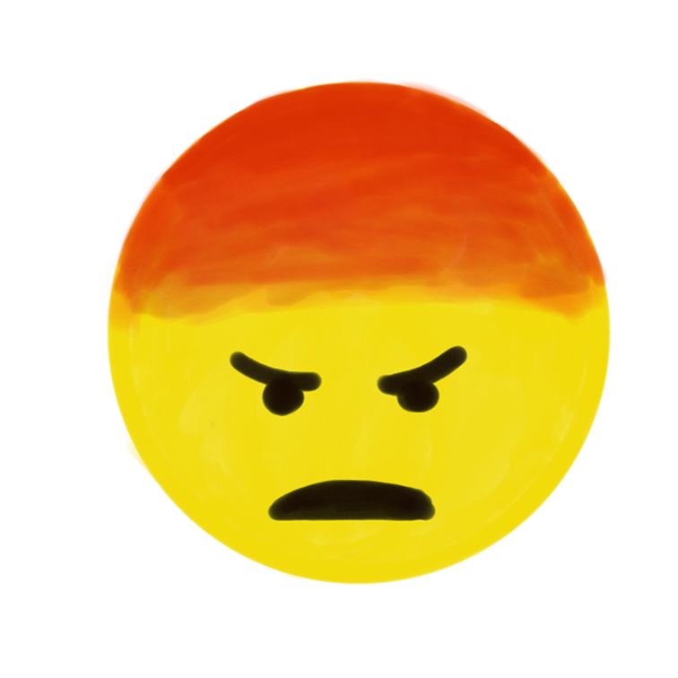
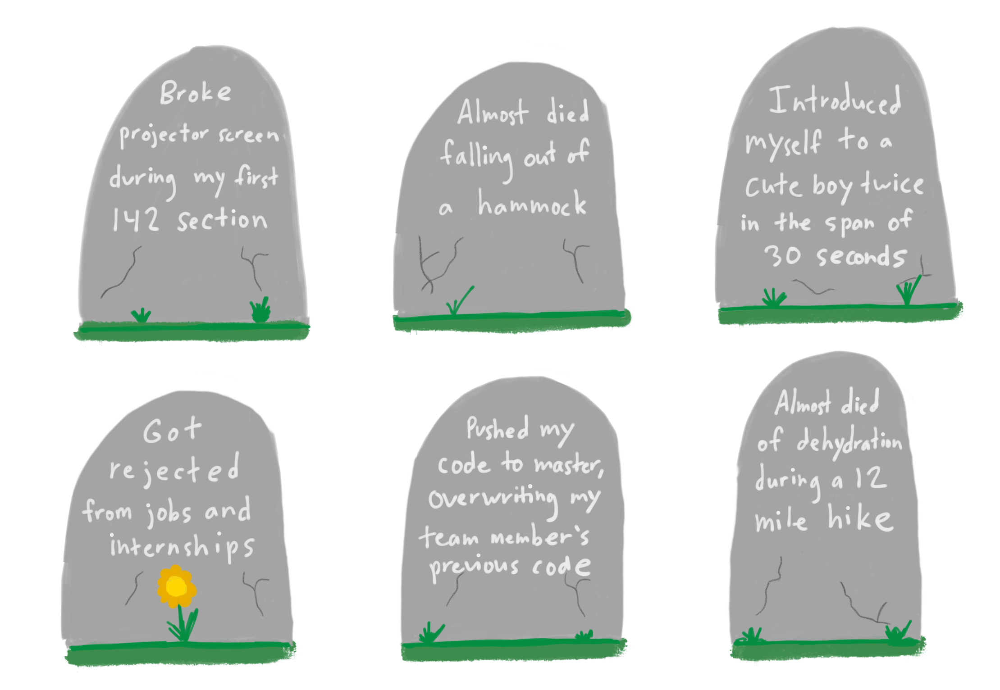

This is the result of me getting an iPad Pro and being bored over winter break. I hope you enjoy~
Here are some new friends I made this year! I grabbed them using the Facebook API.
2017 was a rollercoaster. Here are some emotions I felt over this year (hover to see a breakdown):
 



You're not doing life correctly if you're not failing from time to time. Here lie the repressed memories of my failures:
